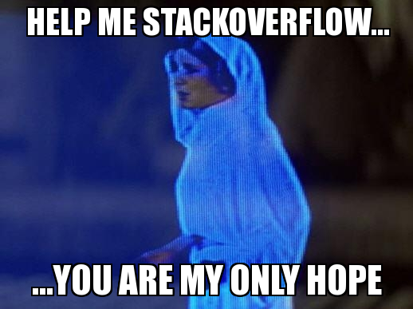

factor <- c("a", "b", "c", "d", "e")
value <- c(1, 2, 3, 4, 5)
df <- tibble::tibble(factor, value)
df# A tibble: 5 × 2
factor value
<chr> <dbl>
1 a 1
2 b 2
3 c 3
4 d 4
5 e 5Cuando comenzamos a interactuar con R, una de las primeras cosas que probablemente descubriste fue cómo importar tus datos a R. Tuviste que utilizar algún método para leer tus adorables conjuntos de datos de Excel en R para poder lograr lo que querías. Tal vez utilizaste read.csv o read.table, o tal vez utilizaste el paquete reciente de Hadley Wickham, readr.
Este tutorial tiene la intención de “volver a lo básico” un poco y aprender a “crear” nuestros propios datos.
Probablemente ya tengas tus datos en un hermoso documento de excel y, como tal, puede que no parezca haber una buena razón para inventar datos. Sin embargo, hay varias buenas razones por las que esto puede ser útil:
1. Trabajar en problemas a pequeña escala antes de utilizar todos tus datos.
2. Es posible que desees realizar algún tipo de estudio de simulación.
3. Es posible que desees simular datos que esperas recopilar para asegurarte de tener los métodos correctos enumerados en tu propuesta.
4. Es posible que te quedes atascado y quieras pedir ayuda.
El enfoque aquí estará en el último punto, es bastante inevitable que te encuentres con algún tipo de problema de programación. ¡Todos lo hacemos! Cuando esto sucede y deseas enviar algún código a un amigo, colega o incluso hacer una pregunta en internet, debes proporcionar un ejemplo reproducible.
Al hacer esto, evitas la necesidad de enviar tu archivo de código y todo el conjunto de datos como adjuntos a un amigo o colega para que lo revisen. Un ejemplo reproducible significa que alguien puede copiar y pegar rápidamente solo el código que envías y reproducir tu error o el problema que tienes.
Es importante tener en cuenta aquí que para que alguien pueda ayudarte, no necesitan todo el conjunto de datos. Solo necesitan poder ver el problema y tener la pregunta asociada para solucionarlo.

Este tutorial tiene la intención de ayudar a las personas que son relativamente nuevas en R a crear un ejemplo reproducible y también a generar datos falsos para otros propósitos.
En el caso más sencillo, puedes crear múltiples vectores y luego combinarlos en un data.frame.
factor <- c("a", "b", "c", "d", "e")
value <- c(1, 2, 3, 4, 5)
df <- tibble::tibble(factor, value)
df# A tibble: 5 × 2
factor value
<chr> <dbl>
1 a 1
2 b 2
3 c 3
4 d 4
5 e 5Alternativamente, puedes hacerlo todo en un solo paso (ten en cuenta que ahora estás utilizando = en lugar de <- al especificar los vectores de satos que se asignaran a las variables de un data.frame):
df <- tibble::tibble(
factor = c("a", "b", "c", "d", "e"),
value = c(1, 2, 3, 4, 5)
)
df# A tibble: 5 × 2
factor value
<chr> <dbl>
1 a 1
2 b 2
3 c 3
4 d 4
5 e 5Esta técnica puede funcionar para una variedad de situaciones, pero también puede ser demasiado simple en ocasiones. Por ejemplo, si tienes múltiples vectores, puede resultar complicado crear muchos vectores y luego combinarlos, o si tienes un diseño experimental complicado (como un diseño jerárquico en bloques) que te gustaría replicar.
Un atajo útil es usar sample, rnorm o runif para crear algunos datos.
-sample crea datos ALEATORIOS del tamaño especificado con o sin reemplazo. Por ejemplo, 10 números aleatorios sin reemplazo:
data <- sample(10)
data [1] 1 2 5 8 7 6 4 9 10 3O, 10 números aleatorios con reemplazo:
data <- sample(10, replace = TRUE)
data [1] 2 2 6 9 2 9 9 8 4 2Puedes crear un vector y luego realizar una muestra de él:
factor <- c("a", "b", "c", "d", "e")
data <- sample(factor, replace = TRUE)
data[1] "a" "a" "d" "b" "b"También puedes repetir el muestreo n veces. Por ejemplo, tomar muestras de cuatro palos de cartas, 100 veces:
suits <- c("Hearts", "Spades", "Clubs", "Hearts")
cards <- sample(suits, size = 100, replace = TRUE)Ten en cuenta que en los ejemplos anteriores, el resultado no es un data.frame, lo cual puede ser o no importante. Utiliza as.data.frame() o tibble::tibble() para esto, si es necesario.
data <- tibble::tibble(sample(10))rnorm crea datos a partir de una distribución normal.
data <- rnorm(100)Por defecto, rnorm extrae datos de una población con media = 0 y desviación estándar = 1. Podemos cambiar cualquiera de estos valores para obtener una muestra de una distribución normal con una media y desviación estándar especificadas. Por ejemplo, para obtener 100 números de una distribución normal con una media de 25 y una desviación estándar de 1.5:
data <- rnorm(100, mean = 25, sd = 1.5)runif crea datos a partir de una distribución uniforme.
data <- runif(100)
head(data)[1] 0.3863888 0.8667701 0.4693397 0.9263313 0.3195581 0.8169662Al igual que rnorm, runif recupera valores de una distribución con min = 0 y max = 1. Podemos cambiar esto a lo que queramos. Por ejemplo, para obtener 100 números aleatorios entre -10 y 5:
data <- runif(100, min = -10, max = -5)Afortunadamente, R tiene prácticamente todas las distribuciones incorporadas para generar muestras. ¡Esto es realmente útil si estás teorizando datos antes de comenzar su recopilación! Una lista completa se encuentra aquí.
Por ejemplo, ¿qué sucede si los datos provienen de cuatro réplicas de cada uno de los cinco sitios y deseas recrear un vector para los valores de factor repetidos?
Podrías hacer esto:
site <- c("a", "a", "a", "a", "b", "b", "b", "b", "c", "c", "c", "c", "d", "d", "d", "d", "e", "e", "e", "e")Es mejor aprovechar la función rep. Esta función replica valores en un vector o lista. Se logra el mismo resultado que se mostró anteriormente con esto.
site <- c(rep("a", 4), rep("b", 4), rep("c", 4), rep("e", 4))Alternativamente:
site <- rep(c("a", "b", "c", "d"), each = 4)O, puedes replicar hasta alcanzar una cierta longitud del vector. Para obtener 50 réplicas de cada uno de los cuatro sitios, usaríamos lo siguiente:
site <- rep(c("a", "b", "c", "d"), length = 50)¡Esto se vuelve cada vez más valioso a medida que aumentas el número de repeticiones y/o factores a incluir!
expand.grid es muy útil para crear un marco de datos que contenga todas las combinaciones de todos los niveles de múltiples factores. Por ejemplo, si hubiéramos muestreado cuatro sitios de cada una de las cuatro regiones en cada uno de los tres estados, podríamos usar esto para crear
study <- tidyr::crossing(
state = c("NSW", "VIC", "QLD"),
region = c("N", "E", "S", "W"),
site = c("a", "b", "c", "d")
)Luego podríamos agregar algunos datos para simular la riqueza de especies en cada sitio:
study <- study |>
dplyr::mutate(richness = rnorm(nrow(study), mean = 15, sd = 3))El argumento nrow se utiliza para reemplazar la cantidad correcta de datos en un data.frame (en este caso, 48, que es el número de filas en tu diseño de estudio).
Podrías usar un conjunto de datos incorporado que se carga en R para reproducir tu problema. Puedes ver rápidamente la lista de conjuntos de datos incorporados.
library(help = "datasets")Luego carga un conjunto de datos utilizando:
data(iris)Tal vez tengas datos ultra complicados y no puedas encontrar la forma de reproducir el problema utilizando datos falsos. Bueno, para eso sirve dput. Esta función se utiliza comúnmente para escribir un objeto en un archivo o para recrearlo.
Veamos un ejemplo. Supongamos que estás trabajando con el conjunto de datos quakes.
data(quakes)
head(quakes) lat long depth mag stations
1 -20.42 181.62 562 4.8 41
2 -20.62 181.03 650 4.2 15
3 -26.00 184.10 42 5.4 43
4 -17.97 181.66 626 4.1 19
5 -20.42 181.96 649 4.0 11
6 -19.68 184.31 195 4.0 12Si solo queremos reproducir la estructura de los datos, podríamos utilizar head en combinación con dput.
dput(head(quakes))structure(list(lat = c(-20.42, -20.62, -26, -17.97, -20.42, -19.68
), long = c(181.62, 181.03, 184.1, 181.66, 181.96, 184.31), depth = c(562L,
650L, 42L, 626L, 649L, 195L), mag = c(4.8, 4.2, 5.4, 4.1, 4,
4), stations = c(41L, 15L, 43L, 19L, 11L, 12L)), row.names = c(NA,
6L), class = "data.frame")Podemos luego copiar y pegar esta salida en un correo electrónico, etc. Sin embargo, asegúrate de nombrar primero el data.frame para crear un objeto para quien lo vaya a utilizar.
reproduced_df <- structure(list(
lat = c(-20.42, -20.62, -26, -17.97, -20.42, -19.68),
long = c(181.62, 181.03, 184.1, 181.66, 181.96, 184.31),
depth = c(562L, 650L, 42L, 626L, 649L, 195L),
mag = c(4.8, 4.2, 5.4, 4.1, 4, 4),
stations = c(41L, 15L, 43L, 19L, 11L, 12L)),
.Names = c(
"lat", "long", "depth", "mag", "stations"),
row.names = c(NA, 6L),
class = "data.frame")¿Qué sucede si solo tenemos problemas con ciertas filas?
tmp <- quakes[30:40, ]
dput(tmp)structure(list(lat = c(-19.84, -22.58, -16.32, -15.55, -23.55,
-16.3, -25.82, -18.73, -17.64, -17.66, -18.82), long = c(182.37,
179.24, 166.74, 185.05, 180.8, 186, 179.33, 169.23, 181.28, 181.4,
169.33), depth = c(328L, 553L, 50L, 292L, 349L, 48L, 600L, 206L,
574L, 585L, 230L), mag = c(4.4, 4.6, 4.7, 4.8, 4, 4.5, 4.3, 4.5,
4.6, 4.1, 4.4), stations = c(17L, 21L, 30L, 42L, 10L, 10L, 13L,
17L, 17L, 17L, 11L)), row.names = 30:40, class = "data.frame")¡Esta es una excelente forma de enviar código a alguien para pedir ayuda!
Este tutorial está principalmente destinado a nuevos usuarios de R, y es probable que los consejos y trucos mencionados anteriormente ayuden a otras personas a ayudarte en la gran mayoría de los casos. Sin embargo, en caso de que no sea así, podría ser necesario proporcionar información adicional. sessionInfo() proporciona un resumen de la versión de R que se está ejecutando actualmente, el sistema operativo y los paquetes que están cargados.
sessionInfo()R version 4.5.2 (2025-10-31 ucrt)
Platform: x86_64-w64-mingw32/x64
Running under: Windows 11 x64 (build 26200)
Matrix products: default
LAPACK version 3.12.1
locale:
[1] LC_COLLATE=Spanish_Peru.utf8 LC_CTYPE=Spanish_Peru.utf8
[3] LC_MONETARY=Spanish_Peru.utf8 LC_NUMERIC=C
[5] LC_TIME=Spanish_Peru.utf8
time zone: America/Lima
tzcode source: internal
attached base packages:
[1] stats graphics grDevices utils datasets methods base
loaded via a namespace (and not attached):
[1] vctrs_0.6.5 cli_3.6.5 knitr_1.51 rlang_1.1.6
[5] xfun_0.55 otel_0.2.0 purrr_1.2.0 generics_0.1.4
[9] jsonlite_2.0.0 glue_1.8.0 htmltools_0.5.9 rmarkdown_2.30
[13] evaluate_1.0.5 tibble_3.3.0 fastmap_1.2.0 yaml_2.3.12
[17] lifecycle_1.0.4 compiler_4.5.2 dplyr_1.1.4 htmlwidgets_1.6.4
[21] pkgconfig_2.0.3 tidyr_1.3.2 rstudioapi_0.17.1 digest_0.6.39
[25] R6_2.6.1 tidyselect_1.2.1 utf8_1.2.6 pillar_1.11.1
[29] magrittr_2.0.4 tools_4.5.2 Otros puntos importantes
Asegúrate de definir claramente lo que estás buscando. ¿Tienes una pregunta puramente estadística o una pregunta de programación?
Es una buena idea incluir los paquetes necesarios que estás utilizando y en los cuales ocurre el problema.
Siempre debes indicar lo que has intentado hasta ahora en cuanto a código y/o cualquier sitio de referencia que estés utilizando.
Conclusiones
Hay varias razones por las que podemos querer usar datos falsos.
Es bastante fácil crear datos falsos.
Si envías el ejemplo reproducible más sencillo posible a alguien, hay una mayor probabilidad de que te ayuden de manera más eficiente.
Muchas veces, al simplificar el problema, incluso puedes resolverlo tú mismo.
Aprende a usar dput, pero no olvides nombrar el objeto al copiar el código desde la consola de R.
Toda esta información no es realmente útil a menos que tengas a alguien que responda tu pregunta después de haber creado tu buen ejemplo reproducible. Una alternativa para solicitar ayuda a colegas y amigos es utilizar sitios web en línea, como Stack Overflow. Los consejos de este tutorial te ayudarán a formular una pregunta que no sea eliminada o prohibida. Además, cuando hagas una pregunta, asegúrate de mostrar que has realizado investigaciones previas.

Hay más ayuda en la web para crear ejemplos reproducibles. Por ejemplo, consulta aquí, aquí, aquí o aquí.
Autor: Corey T. Callaghan
Año: 2017
Última actualización: Ene. 2026